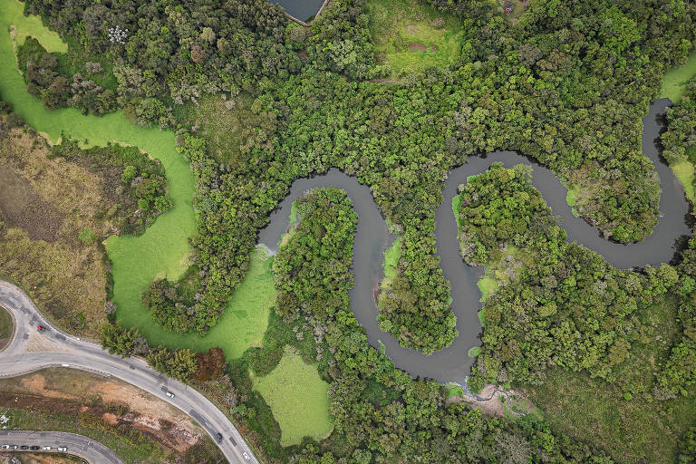
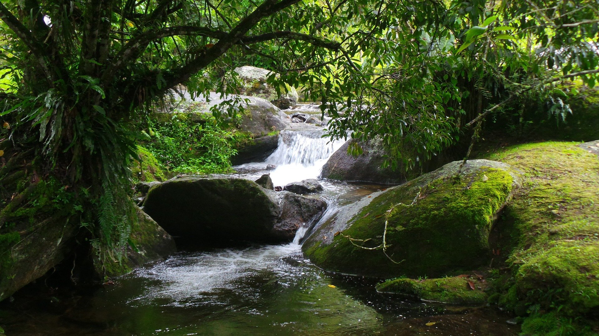

Rios
Bacia do Tiête é pouco preservada
Bacia hidrográfica do Tiête, importante para abastecimento, tem pouca área preservada
Saiba maisRios
A hidrografia da mata atlântica é um dos aspectos mais importantes do bioma, já que a água é um recurso essencial para a vida e para o equilíbrio dos ecossistemas.
04/05/2026

A Mata Atlântica enfrenta um problema cada vez mais preocupante relacionado à qualidade da água de seus rios e nascentes. Mesmo sendo um dos biomas mais importantes do país e responsável pelo abastecimento de milhões de pessoas, diversos estudos mostram que a situação hídrica da região continua se deteriorando por causa do desmatamento, da poluição e da falta de saneamento básico.
Pesquisas recentes da Fundação SOS Mata Atlântica revelaram que a maioria dos rios monitorados apresenta qualidade apenas regular, enquanto muitos outros já são classificados como ruins ou péssimos. Em 2025, nenhum dos pontos analisados atingiu nível considerado ótimo, e apenas 3,1% foram avaliados como bons.
A retirada da vegetação nativa é uma das principais causas desse cenário. As árvores têm papel essencial na proteção dos rios, pois ajudam a filtrar impurezas, evitam erosões e mantêm o equilíbrio do solo. Sem essa cobertura natural, grandes quantidades de sedimentos chegam aos cursos d’água, deixando-os mais poluídos e vulneráveis. Além disso, o avanço urbano e o despejo de esgoto sem tratamento agravam ainda mais a contaminação.
Outro problema é a fragmentação da floresta. Atualmente, restam apenas cerca de 24% da cobertura original da Mata Atlântica, o que compromete o equilíbrio climático e reduz a capacidade natural de preservação das bacias hidrográficas.
As consequências dessa degradação afetam tanto a natureza quanto a população. A piora da água prejudica espécies aquáticas, reduz a disponibilidade para abastecimento e aumenta riscos à saúde humana. Em algumas regiões, rios que antes eram utilizados para lazer, pesca e consumo já não possuem condições adequadas para essas atividades.
Diante disso, especialistas defendem medidas urgentes, como ampliação do saneamento básico, recuperação das matas ciliares e fortalecimento das políticas ambientais. Projetos de preservação desenvolvidos por organizações ambientais também têm papel importante na tentativa de proteger os rios e recuperar áreas degradadas. Assim, cuidar da Mata Atlântica significa também preservar a qualidade da água e garantir melhores condições de vida para as futuras gerações.


Rios
Bacia hidrográfica do Tiête, importante para abastecimento, tem pouca área preservada
Saiba maisRios
Mais de 60% dos rios do bioma não possuem água propícia para consumo
Saiba maisRios
Mesmo com esforços para recuperação do bioma, a qualidade da água continua ruim
Saiba mais